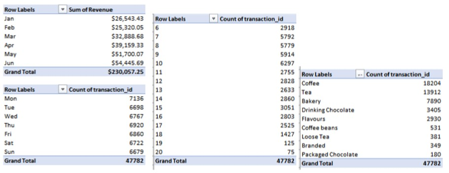
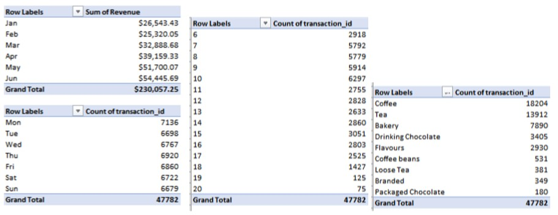

Data Modelling using Power Pivot
Below is a screenshot of the pivot table after cleansed and prepared tables were created before making a dashboard.


As a new franchise owner at Maven Roaster, a coffee shop chain in New York city, they need to understand the purchase behavior and streamline operations. This includes the transactional data from January 2023 - June 2023.
The goals is to transform the data into dynamic dashboard that franchise owners can use to identify patterns, trends and opportunities for the business.
The dataset includes the transaction date, timestamp and location, along with product-level details;
Below is a screenshot of the pivot table after cleansed and prepared tables were created before making a dashboard.

Key Insights:
• Lower Manhattan was busiest in the Monday morning commute between 7 and 10 am.
• There is a significant increase in sales on Monday at Lower Manhattan; however, by 7 to 8 pm on the evening, not much product is being sold.
• Brewed Chai tea drive the most revenue for the business.
• Coffee are accounted for the top-selling products while Packaged Chocolate and Branded are least sold at Maven Roaster.